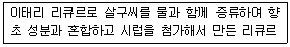
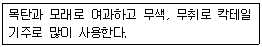
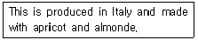
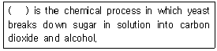
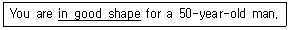
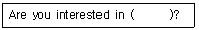

조주기능사 (2005-04-03 기출문제)
1과목: 주류학개론
1. 샴페인에 대한 설명 중 맞는 것은?
- 불란서 샴파뉴산 포도주
- 독일의 샴파뉴산 포도주
- 이탈리아 샴파뉴산 포도주
- 스페인 샴파뉴산 포도주
(정답률: 62%)

2. 1510년 불란서 Fecamp 사원에서 성직자가 만든 술로서 D.O.M 이라고도 불리며 주정도가 43도인 혼성주는?
- 샤르뜨뢰즈(Chartreause)
- 베네딕틴(Benedictine)
- 드람뷔이(Drambuie)
- 코인트루(Cointreau)
(정답률: 75%)
3. 다음은 어떤 리큐르에 대한 설명인가?

- 체리브랜디(Cherry Brandy)
- 큐라소(Curacao)
- 아마레토(Amaretto)
- 티아 마리아(Tia Maria)
(정답률: 93%)
4. 위스키(Whisky)를 만드는 과정이 올바른 순서는?
- Aging -Fermentation -Distillation -Mashing
- Mashing -Fermentation -Distillation -Aging
- Mashing -Distillation -Fermentation -Aging
- Aging -Distillation -Fermentation -Mashing
(정답률: 55%)
5. 데킬라 선라이즈를 만들 때 필요치 않은 것은?
- 데킬라
- 진
- 오렌지 쥬스
- 그레나딘 시럽
(정답률: 80%)
6. 파 스탁(Par stock)이란 무엇인가?
- 적정 재고량
- 총판매량
- 매출원가
- 재고정리
(정답률: 94%)
7. 다음 중 식욕촉진 와인(Aperitif drink)으로 가장 적당한 것은?
- Dry Sherry Wine
- White Wine
- Red Wine
- Port Wine
(정답률: 79%)
8. 다음중 원산지가 프랑스인 술은?
- 아브상(Absinthe)
- 큐라소(Curacao)
- 깔루아(Kahlua)
- 드람뷔이(Drambuie)
(정답률: 43%)
9. 다음 중 Rum Base 칵테일(Cocktail)은?
- Dubonnet Cocktail
- Bacardi Cocktail
- Honeymoon Cocktail
- Knock-out Cocktail
(정답률: 67%)
10. 다음 술 중 리큐르가 아닌 것은?
- Cointreau
- Seagrams V.O
- Anisette
- Benedictine
(정답률: 66%)
11. 스카치 위스키의 원산지는?
- 네덜란드
- 잉글랜드
- 스코틀랜드
- 아일랜드
(정답률: 75%)
12. 깁슨(Gibson)을 만들 때 필요치 않는 기구는?
- 바 스트레이너(Bar strainer)
- 믹싱 글라스(Mixing glass)
- 바 스푼(Bar spoon)
- 레몬 스퀴저(Lemon squeezer)
(정답률: 63%)
13. 다음 중 인공감미료(人工甘味料)는?
- 그래뉼레이트슈거(granulated sugar)
- 사카린나트륨(saccharin natrium)
- 큐브슈거(cube sugar)
- 파우더슈거(powder sugar)
(정답률: 61%)
14. 1 Pint는 Ounce로 환산하면 얼마인가?
- 32 oz
- 16 oz
- 8 oz
- 4 oz
(정답률: 57%)
15. Snifter에는 일반적으로 어떤 음료를 제공하는 것이 가장 좋은가?
- Soft Drink
- Cocktail Drink
- Mixed Drink
- Armagnac 종류
(정답률: 16%)
16. 커피컵 중 데미타제(Demitasse)컵의 크기는?
- 일반 커피컵의 1/2 크기
- 일반 커피컵의1⅓크기
- 일반 커피컵과 동일한 크기
- 5온스들이 컵의 크기
(정답률: 40%)
17. 탄산가스와 무기 염료가 함유된 탄산수로 천연광천수와 인공적으로 가공하여 만든 것 2가지가 있다. 주로 하이볼 종류의 칵테일을 만들 때 사용하며, 연하고 작은 거품이 나며 가스의 지속성이 오래 가서 시원함을 느끼게 하는 탄산음료는?
- 칼린스 믹스(collins mix)
- 콜라(cola)
- 소다수(soda water)
- 에비안(evian water)
(정답률: 52%)
18. 칵테일의 조주목적에 적합하지 않은 것은?
- 시각적인 효과를 얻는다.
- 식사할 때 같이 마신다.
- 술을 부드럽게 만든다.
- 미각적인 효과를 얻는다.
(정답률: 66%)
19. 다음 중 cordials가 아닌 것은?
- 베네딕틴(Benedictine)
- 코인트루(Cointreau)
- 크림 데 카카오(Creme de Cacao)
- 진(Gin)
(정답률: 78%)
20. Non-Stem 글라스는 어느 것인가?
- 리큐르 글라스
- 칵테일 글라스
- 고블렛
- 텀블러
(정답률: 78%)
21. 다음 중 비알콜성 음료의 분류가 아닌 것은?
- 기호음료
- 청량음료
- 영양음료
- 유성음료
(정답률: 77%)
22. 1 pony는 몇 ounce인가?
- 1 ounce
- 1½ ounces
- 2 ounces
- 3 ounces
(정답률: 57%)
23. 다음은 무엇에 대한 설명인가?

- 진(Gin)
- 데킬라(Tequila)
- 보드카(Vodka)
- 럼(Rum)
(정답률: 67%)
24. 스카치 위스키 (Scotch Whisky)의 주원료는?
- 호밀
- 옥수수
- 보리
- 감자
(정답률: 40%)
25. 다음 와인 중 맛에 따른 분류는?
- Fortified Wine
- Aperitif Wine
- Medium Dry Wine
- Aromatized Wine
(정답률: 67%)
26. 다음 중 미국을 대표하는 리큐르(liqueur)는?
- 슬로우 진(Sloe Gin)
- 리카르드(Ricard)
- 사우던 컴포트(Southern Comfort)
- 크림 데 카카오(Creme de cacao)
(정답률: 44%)
27. 다음 중 리큐르(liqueur)제조시 향유 혼합법은?
- 증류법(Distillation)
- 침출법(Infusion)
- 엣센스법(Essences)
- 여과법(Filtration)
(정답률: 61%)
28. Million Dollar의 주재료는?
- Scotch whisky
- Rum
- Bourbon whisky
- Gin
(정답률: 27%)
29. Daiquiri Frozen의 주재료와 부재료는 어느 것인가?
- Grenadine syrup과 Lime juice
- Vodka와 Lime juice
- Rum과 Lime juice
- Brandy와 Grenadine syrup
(정답률: 52%)
30. 칵테일 조주방법에서 플로팅(Floating)으로 적합한 설명은?
- 재료의 비중을 이용하여 띄우는 것이다.
- 칵테일 글라스 가장자리에 설탕을 묻히는 방법이다.
- 증류주에 불을 붙이는 방법이다.
- 얼음을 갈아 칵테일을 차갑게 만드는 것이다.
(정답률: 82%)
2과목: 주장관리개론
31. 월말 인벤토리(inventory)는 무슨 조사인?
- 재고량
- 매상고
- 순수익
- 월경비
(정답률: 75%)
32. 맥주 서어브시 거품이 글라스 윗부분에 생기도록(Nicehead of foam)하여야 한다. 그 이유 중 틀린 것은?
- 모양도 좋고 시원한 느낌을 준다.
- 탄산가스의 증발을 억제하여 맥주의 맛을 증진시킨다.
- 거품 없이 따른 맥주보다 더 적게 마실 수 있다.
- 거품 없이 따른 맥주보다 맛이 좋다.
(정답률: 69%)
33. 고객께서 위스키를 주문하시고, 얼음과 함께 콜라나 소다수, 물 등을 원할 때 제공하는 글라스는?
- 와인 디켄터(Wine Decanter)
- 칵테일 디켄터(Cocktail Decanter)
- 칼린스 글라스(Collins Glass)
- 칵테일 글라스(Cocktail Glass)
(정답률: 58%)
34. 영업을 위한 준비작업 사항 중 틀린 것은?
- 영업개시 전에 그날의 필요품을 보급 수령한다.
- 조주에 필요한 장식품들은 영업종료 후 다음날 것을 미리 준비한다.
- 모든 청소는 영업개시 전에 반드시 완료한다.
- 영업 종료 후에 부패성이 있는 쓰레기를 즉시 치운다.
(정답률: 61%)
35. 바(Bar)업무능률 향상을 위한 시설물 설치 방법 중 옳지 않는 것은?
- 칵테일 얼음은 바(Bar)작업대 옆에 보관한다.
- 바(Bar)의 수도시설은 믹싱 스테이션(Mixing Station)바로 후면에 설치한다.
- 냉각기(Cooling Cabinet)는 주방에 설치한다.
- 얼음제빙기는 가능한 바(Bar)내에 설치한다.
(정답률: 36%)
36. 다음 중 쉐이커(shaker)를 사용하여야 하는 것은?
- 브랜디 알렉산더(Brandy Alexander)
- 드라이 마티니(Dry Martini)
- 올드 훼숀(Old fashioned)
- 크렘데 멘트 흐라페(Creme de Menthe frappe)
(정답률: 29%)
37. 음료메뉴(Beverage list)설정방법 중 가장 적당치 못한 것은?
- 경영 정책을 음료에 포함시킨다.
- 내용이 충실하며 고가로 판매할 수 있어야 한다.
- 계절감을 채택하여야 한다.
- 이미지(Image)개선을 위해 특별 칵테일을 고안 판매한다.
(정답률: 74%)
38. Cocktail party에 안주로 사용되는 것으로 가장 어울리는 것은?
- 오렌지(orange)
- 레몬(lemon)
- 체리(cherry)
- 카나페(canape)
(정답률: 72%)
39. 다음 중 Ice Equipment 가 아닌 것은?
- Ice Pail
- Ice Scoop
- Ice Tong
- Ice Knife
(정답률: 64%)
40. 주장설비 조건과 관계가 없는 것은?
- 조명과 음악의 조화
- 바텐더의 인체 조건의 참조
- 바텐더의 활동공간의 필요
- 분위기와 시설이 업장에 알맞은 구조
(정답률: 73%)
41. 효과적인 음료통제제도로 부적당한 것은?
- 주문시에는 서면구매 청구서를 사용한다.
- 검수시에는 송장과 구매 청구서를 대조 ,체크한다.
- 영속적인 재고조사 시스템을 둔다.
- 바의 간이 창고에는 한 달 분의 재료를 저장한다.
(정답률: 87%)
42. 믹싱글라스(mixing glass)의 설명으로 맞지 않는 것은?
- 바 글라스(bar glass)라고 부른다.
- 재료를 혼합하거나 차게 할 때 사용한다.
- 머들러(muddler)를 사용, 음료를 혼합한다.
- 세이커(shaker)를 사용, 재료를 섞이게 한다.
(정답률: 50%)
43. 술의 손실방지 및 술을 따를 때 용이하게 하는 기구는?
- Squeezer
- Pourer
- Muddler
- Decanter
(정답률: 56%)
44. 바(bar)에서 사용한 글라스(glass)세척에 대한 설명이 아닌 것은?
- 글라스 세척용 중성세제를 사용한다.
- 두 번 이상 헹군다.
- 세척한 글라스는 잔의 테두리를 잡고 운반한다.
- 세척한 글라스는 종류별로 보관한다.
(정답률: 81%)
45. 설탕, 계란 등을 이용하는 칵테일에 필요한 기구는?
- 믹싱글라스(Mixing Glass)
- 스트레이너(Strainer)
- 스퀴저(Squeezer)
- 세이커(Shaker)
(정답률: 75%)
46. 위생적인 음료 취급이 아닌 것은?
- 맥주와 맥주글라스는 차갑게 보관된 것을 서브한다.
- 글라스는 반드시 1/3 하단 부분을 손끝으로 가볍게 쥐어 서브한다.
- 와인을 따를 때 글라스에 와인병이 닿아야 한다.
- 와인을 따를 때 테이블 크로스에 와인 방울이 떨어지지 않도록 한다.
(정답률: 93%)
47. 음료저장 관리방법 중 선입선출(FIFO)의 원칙을 철저히 준수하여야 하는 술은?
- 위스키(Whisky)
- 생맥주(Draft Beer)
- 보드카(Vodka)
- 진(Gin)
(정답률: 91%)
48. 다음 기물 중 조주상에 사용되는 술계량기는?
- 하이볼(high ball)
- 바-스트레이너(bar strainer)
- 머들러(muddler)
- 지거(jigger)
(정답률: 89%)
49. 바(Bar)영업을 하기 위한 준비사항이 아닌 것은?
- 칵테일(Cocktail)에 필요한 가니쉬(Garnish)를 만든다.
- CO2가스를 체크한다.
- 스프볼(Soup Bowl)을 준비한다.
- 글라스를 Handling 한다.
(정답률: 64%)
50. 칵테일 용어 중 트위스트(Twist)란 무엇인가?
- 칵테일 내용물이 춤을 추듯 움직임
- 과육을 제거하고 껍데기만 짜 넣음
- 주류 용량을 잴 때 사용하는 기물
- 칵테일에서 2온스를 의미하는 말
(정답률: 72%)
3과목: 고객서비스영어
51. “Which do you like better, tea or coffee?"의 대답으로 나올 수 있는 문장은?
- Tea
- Tea and coffee
- Yes Tea
- Yes coffee
(정답률: 70%)
52. I am afraid you have the ( )number. (전화 잘못 거셨습니다.) 윗글의 ( )에 들어갈 적당한 말은?
- incorrect
- wrong
- missed
- busy
(정답률: 67%)
53. 다음 문장에서 의미하는 것은?

- Amaretto
- Absinthe
- Anisette
- Angelica
(정답률: 70%)
54. 다음 ()안에 적당한 단어는?

- Distillation
- Fermentation
- Classification
- Evaporation
(정답률: 39%)
55. “Not all food is good to eat."의 올바른 해석은?
- 모든 음식은 먹기에 좋지 않다.
- 모든 음식이 먹기에 다 좋은 것은 아니다.
- 모든 음식은 먹을 수 없다.
- 어떤 음식이든지 다 먹기에 좋다.
(정답률: 79%)
56. 다음 중 밑줄 친 부분의 뜻은?

- handsome
- smart
- healthy
- young
(정답률: 56%)
57. 다음 ( )안에 알맞은 단어는?

- make cocktail
- made cocktail
- making cocktail
- a making cocktail
(정답률: 37%)
58. Which is the correct one as a base of Rusty nail in the following?
- Gin
- Whisky
- Rum
- Vodka
(정답률: 32%)
59. 다음 중 Ice bucket 에 해당되는 것은?
- Ice pail
- Ice tong
- Ice pick
- Ice pack
(정답률: 49%)
60. “초청해주셔서 감사합니다."의 가장 올바른 표현은?
- Thank you for inviting me.
- Thank you for invitation me.
- It was thanks that you call me.
- Thank you that you invited me.
(정답률: 77%)